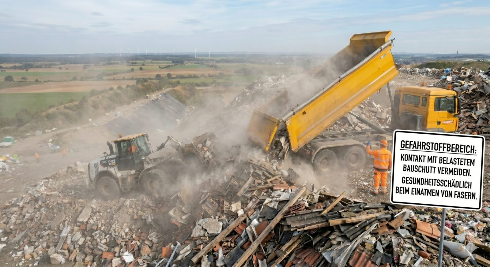

Die alte Peiner-Träger-Deponie bei Berkum ist seit den 1990er Jahren stillgelegt. Statt sie endlich zu sichern, soll sie jetzt reaktiviert und mit einer neuen 30 Meter hohen Halde aus rund einer Million Kubikmeter belastetem Material aufgestockt werden. Dagegen wehren wir uns.
Die Peiner-Träger-Deponie am Eck von Mittellandkanal und Bundesstraße 65 – nur rund 500 Meter von Peine-Horst entfernt – ist seit den 1990er Jahren stillgelegt und liegt seitdem ungenutzt unter Bewuchs. Eine Versiegelung wurde 2010 begonnen, 2014 aber abgebrochen. Statt das Gelände nun endgültig zu sichern, soll es als Deponie der Klasse II reaktiviert werden. Verantwortlich: die HK Rohstoff & Umwelttechnik GmbH & Co. KG – eine gemeinsame Tochter der STRABAG und der Bettels-Gruppe aus Hildesheim. Planung: Ingenieurbüro Born/Ermel. Der offizielle Projektname lautet „Sanierung der Altablagerung sowie Errichtung und Betrieb einer DK II-Deponie" – beides parallel.
Geplant ist eine neue Aufschüttung von 30 bis 35 Metern Höhe – höher als das Peiner Rathaus – über die alten Belastungen drauf. Die Laufzeit: mindestens 20 Jahre. Auf dem rund 11 Hektar großen Gelände sollen rund 900.000 Kubikmeter mineralische Abfälle eingelagert werden – darunter Bauschutt, Gips, Teer und Asbestplatten. Geliefert werden soll aus einem Umkreis von rund 150 Kilometern – also Bauabfälle aus ganz Niedersachsen, Bremen und Teilen Nordrhein-Westfalens.
120 Bürger im Forum Peine. Geschäftsführer Dirk Brozio stellt die Pläne der Betreiberfirma vor. Drei Aussagen aus dem Vortrag – und unsere Antwort.
Untergrund offen
„Die Deponie ist zum Untergrund hin nicht abgedichtet. Alle Polder, auch der bewachsene Polder 1 direkt am Kanal, sind nicht zum Untergrund hin abgedichtet. Das Material befindet sich aktuell teils im Grundwasserbereich."
Vortrag im Forum Peine, 13.05.2026 · PAZ 17.05.2026
Grundwasser kontaminiert
„Das Grundwasser im Bereich der Deponie ist mit Schadstoffen kontaminiert."
Konkret genannt: Arsen, Blei, Bor, Cyanid, Sulfat, Ammonium, PAK, Phenole, BTEX-Aromate – „viele giftig und krebserregend".
Vortrag im Forum Peine, 13.05.2026 · PAZ 17.05.2026
Brozios Plan
„Wir wollen die alte Peiner-Träger-Deponie zum Grundwasser hin abdichten und das Gelände dann als neue Deponie für mineralische Abfälle nutzen."
Dirk Brozio · PAZ 10.05.2026
Unsere Antwort: Sanierung ja, neue Deponie nein
Ja – genau deshalb wäre die Sicherung längst überfällig. Die alte Halde der Peiner Träger versickert seit Jahrzehnten ins Grundwasser. Der jetzige Eigentümer (Peiner Träger / Salzgitter AG) ist verpflichtet, sie endlich zu sichern. Eine Versiegelung wurde 2010 schon einmal begonnen und 2014 abgebrochen – sie muss zu Ende geführt werden.
Aber das rechtfertigt keine neue 30-Meter-Deponie obendrauf. Der offizielle Projektname lautet „Sanierung der Altablagerung sowie Errichtung und Betrieb einer DK II-Deponie". Das „sowie" ist der Trick: aus der Sanierungspflicht wird ein kommerzielles 20-Jahre-Geschäft mit Bau-Schutt aus rund 150 km Umkreis.
Wir fordern: die Altdeponie sichern, Punkt. Keine neue Deponie. Keine 35 Meter. Kein Bauschutt aus Hannover, Wolfsburg oder dem Harz.
Sieben Fragen, die offen blieben
Wo ist die vollständige Stoffliste nach DepV Anhang 4? Brozio nennt 80 % Boden/Steine/Beton/Fliesen mit gefährlichen Stoffen, dazu Asbestplatten, ölhaltige Bohrschlämme, Erdölraffinerie-Abfälle, Rost-/Kesselaschen, Schlacken (PAZ 17.05. Frage 3) – eine geschlossene Stoffliste mit Mengenanteilen fehlt.
Welche Sicherheitsleistung nach DepV § 18 wurde vom Land Niedersachsen festgesetzt? Wer haftet bei Insolvenz des Betreibers in 30, 50, 80 Jahren Nachsorge?
Wie sieht die LKW-Schwankung konkret aus? Brozio: „Im Schnitt 20 LKW pro Tag – das können auch mal 5 oder 30 sein" (PAZ 17.05. Frage 8). Welche Belastungsspitzen sind realistisch?
Welche neue B65-Zufahrt soll kommen? Drei Optionen genannt: Solschen–Peine (unübersichtlich), gegenüber Rodeberg, beim Langen Damm (PAZ 17.05. Frage 9) – keine ist entschieden.
Werden alle Grundwasser- und Luftmessberichte öffentlich (UIG-Auskunftsrecht)?
Welche Notfallpläne existieren für Brand, Leckage und Staubaustrag während der mehrjährigen Aufgrabung?
Warum kein Ausgleichsfonds für Hausbesitzer? Brozio: „Nein. Das ist nicht vorgesehen. Es sei ohnehin unklar, ob durch die Deponie ein Wertverlust der Häuser zu erwarten sei." (PAZ 17.05. Frage 12)
Quelle: Informationsveranstaltung HK-Rohstoff & STRABAG Umwelttechnik im Forum Peine, 13.05.2026 – sowie Berichterstattung der Peiner Allgemeinen Zeitung (Volker Macke) vom 10., 14., 16. und 17.05.2026.
Die Fakten auf einen Blick
Zahlen kann man schwer fassen – darum hier ein paar greifbare Vergleiche.
0 m
Höhe der geplanten Halde (bis zu 35 m)
höher als das Peiner Rathaus ≈ ein 10-stöckiges Hochhaus
m³
Abfall der Deponieklasse II
≈ 360 Olympia-Schwimmbecken
Fußballfelder (FIFA-Norm)
11 ha Geländegröße – so viel Wald und Brache soll weichen
Jahre
geplante Mindestlaufzeit
eine ganze Generation lang
LKW-Ladungen pro Tag im Schnitt
Schwankung 5 bis 30 pro Tag laut Betreiber – über rund 20 Jahre rund 100.000 Anlieferungen
km
Einzugsgebiet für externes Material
Bauabfälle aus Niedersachsen, Bremen und Teilen NRWs
Nur m
zum nächsten bewohnten Haus
Hauptwindrichtung West: Staub und Asbestfasern wehen bei Westwind in unter einer Minute aufs Wohngrundstück. Geschäftsführer Brozio dazu: „Wir halten 700 Meter schon für einen großen Abstand. Es gibt auch Deponien mit nur 300 Metern Entfernung zur nächsten Wohnbebauung."
Was darf in eine Klasse-II-Deponie?
Deponieklasse II nimmt belastete, aber nicht hoch gefährliche Stoffe auf. Laut Betreiber (PAZ 17.05.2026, Frage 3) sollen rund 80 % der eingelagerten Menge Boden, Steine, Beton, Fliesen, Ziegel und Keramik mit gefährlichen Stoffen sein. Hinzu kommen ausdrücklich auch Asbestplatten, ölhaltige Bohrschlämme, Abfälle aus Erdölraffinerie und Erdgasgewinnung, Rost- und Kesselaschen sowie Schlacken – Materialien, die niemand in seiner Nähe haben möchte:

Asbestplatten
Asbestzement aus alten Dächern und Fassaden. Faserstaub gilt als krebserregend (Lungenkrebs, Mesotheliom). Geschäftsführer Brozio hat in der Info-Veranstaltung am 13.05.2026 mehrfach mündlich bestätigt: „Staubende gefährliche Stoffe wie Asbest würden in speziellen Planen verpackt auf Lkw angeliefert und so verpackt auch eingelagert." (PAZ 17.05.2026, Frage 10) Wir fragen: Wie soll das bei 20 LKW pro Tag über 20 Jahre tatsächlich sicher funktionieren – bei Westwind in Richtung Peine?
Bauschutt
Mauerwerk, Beton, Mörtel – verunreinigt mit Schadstoffen aus alten Gebäuden, oft mit Rückständen alter Anstriche und Dämmstoffe.
Teerhaltige Aufbrüche
Alter Straßenbelag mit Teer (PAK, polyzyklische aromatische Kohlenwasserstoffe). Auswaschungen können ins Grundwasser gelangen.
Gipshaltige Abfälle
Gipsplatten, Putzreste, Sanitärabbruch. Sulfate können bei Niederschlag in den Untergrund gelangen.
Belastete Böden
Aushub von kontaminierten Standorten – etwa von Tankstellen, alten Industrieflächen oder Straßenrändern.
Schlacken und Aschen
Reststoffe aus Müllverbrennungsanlagen und der Industrie – häufig mit Schwermetallen belastet.
In Deutschland gibt es fünf Deponieklassen (0 bis IV). Klasse II ist die zweithöchste Stufe für nicht-gefährliche Abfälle – die Stoffe sind belastet genug, dass sie eine Basisabdichtung gegen das Grundwasser brauchen.
So nah ist die Deponie
Die Hauptwindrichtung in Deutschland ist Westwind – Staub und Emissionen ziehen direkt in Richtung Peine.
Im Untergrund lagern hochgiftige Alt-Abfälle aus dem Hochofenwerk Ilsede (1930–1984) und Hunderttausende Kubikmeter Feinschlamm aus dem Peiner Stahlwerk (1984–1995). Der Betreiber räumt selbst ein (Vortrag im Forum Peine am 13.05.2026, dokumentiert in PAZ 17.05.): Die Deponie ist zum Untergrund nicht abgedichtet, das Material reicht teils in den Grundwasserbereich, und Schadstoffe wie Arsen, Blei, Cyanid, PAK und BTEX-Aromate laufen bereits Richtung Peine-West und -Süd ins Grundwasser. Genau deshalb fordern wir die endgültige Sicherung der Altdeponie – aber eine 30-Meter-Aufschüttung mit jahrelanger Aufgrabung kann die Belastung nicht mindern, sondern erst recht freisetzen.
Staub und Asbest
Über Jahre soll Schutt – darunter potenziell Asbestplatten – aufgeschüttet werden. Bei Westwind weht der Staub direkt nach Peine. „Wohin wehen die Stäube, wenn über Jahre der ganze Schutt abgekippt wird?", fragt der ehemalige Ortsvorsteher Jürgen Müller.
Eingriff in die Landschaft
Ein Großteil des Waldes – von der Brache bis zum Kanal – soll weichen. Erste Bäume wurden bereits gefällt. Das über die Jahre entstandene Biotop am Kanal müsste komplett entfernt werden.
Sichtbarer Eingriff über Generationen
„Das wird so hoch, dass es über die Baumwipfel an den Wegen und am Kanal herausragen wird – so einen Klotz gibt es bisher im ganzen Landkreis nicht", warnt Landwirt Henning Kolshorn.
Hintergrund: Was bisher geschah
1930–1984 · Ablagerung giftiger Abfälle aus dem Hochofenwerk Ilsede (später in Peiner Träger aufgegangen).
1984–1995 · Mehrere 100.000 m³ Feinschlamm aus dem Peiner Stahlwerk werden aufgebracht – Befüllung der Polder 1, 2, 3.1 und 3.2.
Ab 1995 · Deponiebetrieb eingestellt – das Areal liegt seitdem ungesichert unter Bewuchs.
Ende 2010 · Peiner Träger beginnt aus Sicherheitsgründen, das Gelände zu versiegeln.
2011 · HEILIT Umwelttechnik beginnt mit der Oberflächenabdichtung der Polder 2, 3.1, 3.2.
2012 · Gründung der Deponie Berkum GmbH als Zweckgesellschaft.
2014 · Die Versiegelung wird abgebrochen, weil eine Baufirma eine Bauschuttdeponie plant. Kosten als zu hoch eingestuft – „schwerer Bauschutt würde auf die kontaminierte Schicht drücken, verseuchtes Wasser würde austreten" (PAZ 10.05.2026).
Seit 2019 · Jährliches Grundwassermonitoring durch Dr. Röhrs & Herrmann.
2023 · HK-Rohstoff & Umwelttechnik übernimmt die Betreiberschaft.
13.05.2026 · STRABAG und Bettels-Gruppe stellen über HK-Rohstoff die Reaktivierungspläne öffentlich vor (Forum Peine, 120 Teilnehmer).
„Einfach bitte die Abdeckung der alten Schlacken zu Ende führen, so wie es mal geplant war, und das Gelände in Ruhe lassen." — Carsten Hoffmann, Berkum
Was Sie tun können
Wo das Verfahren steht: Beim Gewerbeaufsichtsamt Braunschweig (Behördenleiterin Dr. Petra Artelt) läuft die Raumverträglichkeitsprüfung. Eine Flächennutzungsplanänderung steht in 6–9 Monaten an – spätestens dann ist die Politik gefordert. Bis zur möglichen Inbetriebnahme rechnet HK-Rohstoff mit mindestens 2 bis 5 Jahren. Im formellen Planfeststellungsverfahren nach KrWG wird es ein offenes Einwendungs-Fenster geben – das ist die entscheidende Frist.
Auf dem Laufenden bleiben: Im Genehmigungsverfahren laufen Fristen für offizielle Einwendungen. Termine kündigen wir über den Newsletter an.
Informieren: Sprechen Sie mit Nachbarn, Familie und Freunden über die Pläne.
Sichtbar werden: Banner, Aushänge und Aufkleber sind auf Anfrage erhältlich.
Kontakt aufnehmen: Schreiben Sie uns – wir bündeln Ihre Bedenken und tragen sie ins Verfahren.
Berkum sagt NEIN zur Deponie – sagen auch Sie NEIN zur Ungewissheit.
Das Genehmigungsverfahren entscheidet sich in den kommenden Monaten – mit klaren Fristen, in denen Bürger offiziell Einwendungen erheben können. Wer eine Frist verpasst, hat keine zweite Chance.
Wir schreiben nur, wenn es konkret etwas zu wissen oder zu tun gibt:
Termine für Bürgerinformation und öffentliche Anhörung
Fristen für offizielle Einwendungen im Verfahren
Aufrufe zu gemeinsamen Aktionen vor Ort
Updates zu Behördenentscheidungen und Gutachten
Abmeldung jederzeit mit einem Klick.
Die Anmeldung erfolgt über den Dienstleister Brevo (Sendinblue). Mit dem Absenden willigen Sie in die in unserer Datenschutzerklärung beschriebene Datenverarbeitung ein.